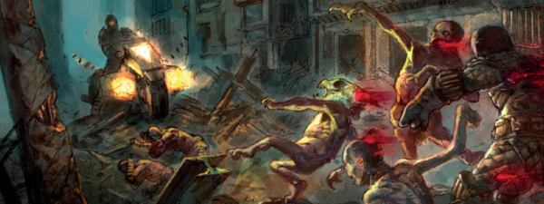

While it felt as if the precursor one-offs (Dreams of Deadworld) had sidestepped previous tales of an early Deadworld, this sequence tries to marry Young Death's Boyhood of a Superfiend and Anderson's Half-Life with a grittier, less gothic and more Grand Guignol zombie-apocalypse flavor. We keep the notion of there now being multiple forms of Dark Judge, and the four we first met (Death, Fear, Fire & Mortis) are wisely kept apart here as separate agents.
Clearly the ultimate enemies of life on this world are the Sisters of Death, who seem to care less about who their agents are as long as they succeed in dooming the world. There is a feeling both of hope (perhaps this is some other dimension, where the populace are not doomed) and despair, as the deeper we venture into the story, the more damned it seems. This is a truly unsettling horror.
Art by Dave Kendall
| Story Title | Parts | Pages | w indicates a wraparound coverCovers | Year(s) | Issues | Writer | Artist | Colourist | Letterer |
|---|---|---|---|---|---|---|---|---|---|
Linked to [Deadworld]Tainted | 9 | 46 | 1980: Clint Langley 1 | 2016 | Reprints: http://content.2000adonline.com/FCBD2017/Tainted.pdf 1973-1981 | Kek-W | Dave Kendall | <-- | Annie Parkhouse |
Linked to [Deadworld]Winter Break | 1 | 8 | 0 | 2016 | 2011 | Kek-W | Dave Kendall | <-- | Annie Parkhouse |
Linked to [Deadworld]Cursed | 11 | 56 | 2025: Clint Langley 2029: Dave Kendall 2 | 2017 | 2023-2033 | Kek-W | Dave Kendall | <-- | Annie Parkhouse |
Linked to [Deadworld]Home | 1 | 6 | 0 | 2017 | 2050 | Kek-W | Dave Kendall | <-- | Annie Parkhouse |
Linked to [Deadworld]Ava | 1 | 8 | 0 | 2017 | 2061 | Kek-W | Dave Kendall | <-- | Annie Parkhouse |
Linked to [Deadworld]Damned | 12 | 60 | 2084: Michael Dowling 2087: Brendan McCarthy 2092: Clint Langley 3 | 2018 | 2081-2092 | Kek-W | Dave Kendall | <-- | Ellie de Ville |
Linked to [Deadworld]Running Scared | 1 | 10 | 0 | 2018 | 2111 | Kek-W | Dave Kendall | <-- | Ellie de Ville |
Linked to [Deadworld]Doomed | 12 | 61 | 2152: Cliff Robinson (P) & Dylan Teague (C) 2157: Cliff Robinson (P) & Dylan Teague (C) 2 | 2019 | 2150-2161 | Kek-W | Dave Kendall | <-- | Annie Parkhouse |
Linked to [Deadworld]Sidney | 1 | 10 | 0 | 2019 | 2162 | Kek-W | Dave Kendall | <-- | Annie Parkhouse |
Linked to [Deadworld]Jessica | 1 | 10 | 0 | 2021 | 2262 | Kek-W | Dave Kendall | <-- | Jim Campbell |
| >> Features << | |||||||||
From New Books Subtitled: "It's The End of the World as We Know It".The Fall of Deadworld | 1 | 2 | 0 | 2019 | M414 | Karl Stock | promo graphics | <-- | n/a |
| year | episodes | pages |
| 2002 | 0 | 0 |
| 2003 | 0 | 0 |
| 2004 | 0 | 0 |
| 2005 | 0 | 0 |
| 2006 | 0 | 0 |
| 2007 | 0 | 0 |
| 2008 | 0 | 0 |
| 2009 | 0 | 0 |
| 2010 | 0 | 0 |
| 2011 | 0 | 0 |
| 2012 | 0 | 0 |
| 2013 | 0 | 0 |
| 2014 | 0 | 0 |
| 2015 | 0 | 0 |
| 2016 | 10 | 54 |
| 2017 | 13 | 70 |
| 2018 | 13 | 70 |
| 2019 | 13 | 71 |
| 2020 | 0 | 0 |
| 2021 | 1 | 10 |
| 2022 | 0 | 0 |
Comic strip data (excludes other content):